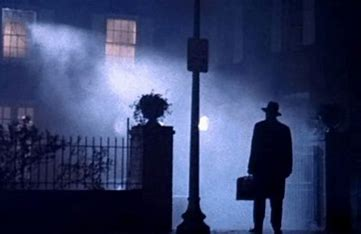
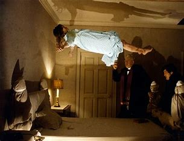
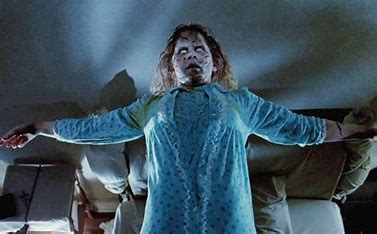

Exorcist
The Exorcist (1973) is a legendary horror film directed by William Friedkin. The story follows a mother, Chris MacNeil, as her young daughter Regan becomes mysteriously possessed by a sinister force. Desperate, Chris turns to two priests to perform an exorcism, leading to a terrifying battle of good versus evil. With its shocking imagery, tense atmosphere, and exploration of faith and fear, The Exorcist remains one of the most influential and unsettling horror films of all time.
Cast
Take a look at featured scenes captured from the film


